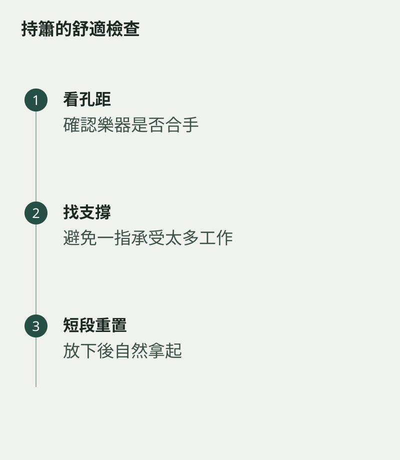

為了遮住洞簫較遠的音孔，手指越伸越直，連手腕也轉得吃力。持簫需要穩定，但穩定不等於用力抓緊。先看樂器孔距是否合手，再調整支撐與指腹位置，會比勉強拉開手指更實際。
不同規格的洞簫，孔距與重量可能不同。選樂器時，除了聽音色，也應試試自然拿起後能否遮孔、轉換指法，以及短時間保持舒適。
先找支撐，再談速度
不用吹奏，輕輕放好手指，觀察哪一處正在承受大部分重量。請老師協助看持握是否平衡，避免某一根手指既要支撐、又要勉強封孔。能自由抬起與落下，才有之後換指的空間。
把容易漏氣的孔逐一檢查，動作小一些，感覺接觸位置。若越用力越不穩，先放下重來，不要把疲倦當成適應過程必須忍受的部分。

練習中定時鬆開
吹一小段便放下樂器，讓雙手回到自然狀態。再拿起時，看看能否不經過一連串扭動就回到原位。出現疼痛或麻痺便停止，不能靠加練解決。
對初學者來說，一個舒服而可重複的持握，遠比看起來很熟練重要。當手指不用一直提醒你「我很辛苦」，注意力才會慢慢回到聲音。樂器在手上安穩了，樂句也較容易在氣息中安穩下來。